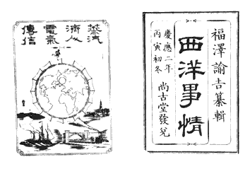
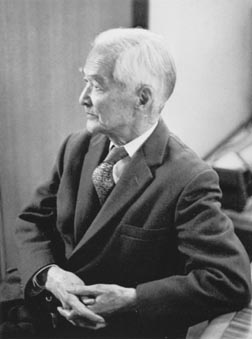
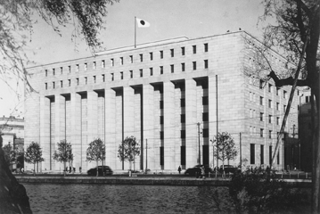
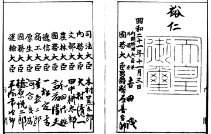

This is a static copy of the final website maintained by the Roy Rosenzweig Center for History and New Media.
Tadashi Aruga
The Japanese Constitution of 1946, which has been in effect since May 1947, states in its preamble that the constitution is founded on the "universal principle of mankind" (jinrui fuhen no genri) that "government is a sacred trust [ genshukuna shintaku ] of the people, the authority for which is derived from the people, the powers of which are exercised by the representatives of the people, and the benefits of which are enjoyed by the people." The constitution declares in its bill of rights section that "these fundamental human rights guaranteed to the people by this Constitution" are "eternal and inviolate rights." It includes a "right to life, liberty, and the pursuit of happiness" among these fundamental rights. 1The Declaration of Independence of the United States leaves clear marks of its influence on the present Japanese Constitution, which was drafted and promulgated as the culmination of the drastic reforms introduced into Japan under the guidance of Gen. Douglas MacArthur's general headquarters. The Declaration of Independence had been known to Japanese since the mid-nineteenth century. Indeed, there had been an age in Japanese history, from the 1860s through the 1880s, when the American document was a source of inspiration and excitement for many Japanese. It was an age when philosophes of the Meiji Enlightenment introduced modern Western ideas to the Japanese audience and many political activists agitated for "freedom and the people's rights." In that age, the translation and propagation of Western ideas were means to promote change. Thus the Declaration of Independence played the role of the standard for change twice in the history of modern Japan, first in the decades of Meiji Enlightenment and the freedom and people's rights movement, and second in the years of democratization after Japan's defeat in World War II. Its basic idea having been firmly transplanted into the Japanese Constitution, the American document today quietly rests in Japan as a historical document without a role in political debate. Translation of books written in Western languages, particularly in English, is a thriving business in Japan today as it was in the early Meiji era. Because of the great difference between the Western languages and Japanese, translation from English into Japanese is still not easy. Although English-Japanese dictionaries of high quality are available today, there are uncountable obstacles and pitfalls for inexperienced translators. Even for experienced translators, there are many difficulties. For one thing, the lack of relative pronouns in the Japanese language is a great source of trouble. The lack of a plural form for countable nouns sometimes obscures the meaning of the original sentence. Moreover, there are no exact Japanese equivalents of many English words, such as "initiative" and "commitment." Translators have to search out the best approximation for such words in the particular contexts in which they appear. There are problems in translating such a common word as "people." 2At best, a translation from English into Japanese is only a reasonable approximation. It was far more difficult for translators to understand and translate English books in political thought, history, and social science in the 1860s and 1870s, when cultural gaps between the West and Japan were much greater than they are today. Of course, there were no good English-Japanese dictionaries. Because of cultural gaps, there were no readily available Japanese words for such key Western concepts as freedom, equality, and right. At first Japanese scholars were able to refer to Chinese translations of Western books. Increasingly, however, Japanese translators had to invent for themselves appropriate Japanese words. They found Japanese words of Chinese origin that could be redefined to convey Western concepts, rediscovered rarely used classical Chinese words, or created new words by making new combinations of Chinese characters. Because the ancient Japanese had borrowed Chinese characters from China to invent written Japanese, and because since then the Japanese had incorporated a great many Chinese words into Japanese to enrich the Japanese vocabulary, the modern Japanese were able to incorporate Western concepts into their language by inventing new words composed of Chinese characters. 3 English was the primary foreign language that intellectuals of the Meiji Enlightenment studied. Impressed by the dominant global sea power of Great Britain and the rising power of the United States, Japanese intellectuals interested in Western learning deserted Dutch learning, Rangaku, the study of Western science and art through Dutch books, to master English. But the accumulation of Dutch learning in Japan greatly facilitated efforts to learn English and translate it into Japanese. Through Dutch learning, Japanese had grasped the nature of a Western language, trained themselves in translation, and gained knowledge about the Western world. 4 Although Japanese translations of the American Declaration of Independence began to appear as early as 1854, the year when the first United States-Japanese treaty was signed in Yokohama, those early translations, based on an American history book written in Chinese, did not convey the political philosophy of the declaration intelligibly. 5It was Fukuzawa Yukichi, the foremost champion of enlightenment in Meiji Japan, who translated the Declaration of Independence and the United States Constitution directly from English for the first time and with considerable skill. In 1866 Fukuzawa introduced those two important American documents to the Japanese public in one of his phenomenal best sellers, Seiyô jijô ,an introductory book on the history and present state of major Western countries. 6It cannot be said that his translation was accurate. But Fukuzawa grasped the core message of the document. His paraphrases, except for some sentences relating to the tyrannical rule of the British king, generally hit near the mark. To illustrate his translation, I shall retranslate its first sentences into English as exactly as possible. When it becomes inevitable for one kin group of people, compelled by the course of events in human life, to leave the government of another nation, to join the rank of the nations of the world and establish a separate nation in accordance with the nature of the reason of the physical world and that of the way of heaven [ butsuri tendô no shizen ], they must explain the reasons for establishing a new nation and let them be known widely by a declaration out of consideration for [other] peoples' sentiments. Heaven [ ten ] created all persons [ hito ] in the same rut [ tetsu ] endowed them with unremovable rights [ tsûgi ]. These rights are, for instance, rights to preserve one's own life, to seek liberty [ jiyû ], and to wish to enjoy happiness [ kôfuku ], and they cannot be taken away from one by others. The reason to institute governments among persons was to make these rights secure, and a government can truly claim its legitimacy only when it satisfies its subjects. If the measures of a government betray the purpose of instituting governments, the people can alter or abolish it and institute a new government on the basis of this great principle to secure their safety and happiness. This, too, is a right of the people. All of this should be quite evident without our argument. To a timid conservative mind, it may seem that a government established long ago cannot be changed easily and lightly. But when a government repeatedly practices willful usurpations, always making the same people their target, however, such evil practice ought to be stopped. Otherwise, the government will eventually exercise absolutely arbitrary power over the whole country. To abolish such a government and secure the future safety of the people is also their right and duty. . . . 7  The title page of Fukuzawa Yukichi's Seiyo jijo, part 1. On the facing page (left side), Fukuzawa placed a world map at the center and four pictures depicting products of modern Western civilization at the bottom. Above the map he placed four Chinese words of two characters each. Those characters (right to left) translate as "steam," "people's welfare," "electricity," and "telegraph." Here Fukuzawa confronted several Western concepts, such as "Creator," "equal," "right," and "liberty." Fukuzawa did not seem to mull much over how to translate the Creator. The Japanese word ten probably came to his mind quite naturally, since the Japanese word meant something sacred, such as the heavenly ruler or the very reason of the universe. He translated "the Laws of Nature and of Nature's God" as butsuri tendô no shizen, which may be literally translated as "the nature of the reason of the physical world and that of the way of heaven." In Chinese philosophy, with which many Japanese were familiar, ten (tian in Chinese) traditionally referred to the ruler in heaven ( shangdi ) who was supposed to supervise the human world on the earth. The Japanese Confucians of the Chu Hsi school identified ten with the reason of the universe that provides it with an order, and there was considerable discussion of this concept of ten in Tokugawa Japan. 8Although Fukuzawa used the word ten for Creator, he soon introduced a new word, zôbutsushu, a more exact translation of the word Creator. In the declaration, God was mentioned in the first paragraph and divine providence in the last paragraph. In translating these words, Fukuzawa avoided kami , the Japanese word for Shinto deities, and used the word tendo, "the way of heaven," obviously considering the latter more appropriate to be applied to the God of the Western monotheism. (Early Japanese Catholics in the sixteenth and seventeenth centuries had called God deuse in japanized Latin. But when American Protestant missionaries translated the Bible into Japanese in the early Meiji era, they decided to use kami to refer to God.) Fukuzawa made use of the deistic concept of Confucianism to convey the message of the American document. 9 It does not appear that the word "people" posed much problem for Fukuzawa, because it is a concrete noun. The word jinmin (renmin in Chinese) was available. He translated the phrase "one people" in the first sentence as "one kin group of people" ( ichizoku no jinmin ). The phrase ichizoku no means "one kin group" or "one tribe," but he may have picked it simply to mean "one group." As I shall mention later, the phrase "one people" caused more problems for later translators. In retranslating Fukuzawa's declaration above, I used "all persons" instead of "all men," to indicate that hito or jin in Japanese ( ren in Chinese) is gender-neutral. Fukuzawa evaded the task of coining a Japanese word for "equal." He chose to translate "created equal" by a figurative expression, "created in the same rut," a Japanese phrase that means "universally in the same way." It was some time later that byôdô ( pingdeng in Chinese) was added to modern Japanese as the standard counterpart for "equality." Fukuzawa seemed to mull over the Japanese words for right and liberty. "We translators," he wrote, "are often perplexed by our difficulty in finding suitable Japanese words for Western words, for in many cases there are no suitable words available." He decided to use tsûgi for right and jiyû for liberty. "We often use jiyû for liberty and tsûgi for right, but these Japanese words cannot convey fully the meanings of these Western words. The Chinese translated liberty in many other ways, but none of them could convey the meaning of the original word so well," he regretted. His reluctance to use jiyû for liberty was due to his fear that jiyû (ziyou in Chinese) might be misunderstood by his reader, for it meant "license" rather than "liberty" in traditional Chinese and Japanese usage. Because the translation of Western concepts was for him a means for social change, he did not want to use an old word tainted with a negative connotation to express a new idea. But jiyû was soon established as the Japanese word for liberty or freedom. 10 In conceiving a Japanese word equivalent to "right," Fukuzawa took the other meanings of that English word into account. He explained in the book that the word "right" in English originally meant "just" and "justice." From that meaning came its second meaning: something to be claimed justly. He mentioned several other Chinese words for it but found none of them satisfactory. Tsû (tong in Chinese) means "throughout," "general," or "universal" and gi ( yi in Chinese) means "justice" or a "just way." But his contemporaries began to use kenri (quanli in Chinese) instead of tsûgi. In response, Fukuzawa substituted kengi for tsûgi, but eventually accepted kenri as the standard Japanese word for "right." Ken (quan ) means "power"; ri (li ) means "interest." Apparently, kenri began to be used as the Japanese equivalent of "right" when the Chinese edition of Henry Wheaton's 1866 book Elements of International Law was introduced into Japan in 1870. The term "power interest" may be appropriate when it refers to rights of a state in international law, since a state should defend its interest with its own power. Even in this case, however, a moral implication remains, because a state can claim its rights when the claim can be justified by international law. As Maruyama Masao commented, Fukuzawa's term tsûgi, "generally just," might have been more appropriate to refer to rights of persons, since it connotes justice in the same manner as the English word does. 11 As for "happiness," a Japanese word, kôfuku, was available. But Fukuzawa could not understand the meaning of "pursuit of happiness." Thus "wish to enjoy happiness" was his translation. His translation contributed to popularizing the word kôfuku in Meiji Japan. Publicists for the freedom and people's rights movement often spoke of the right to preserve or enjoy happiness without being harassed by the government. Although they did not employ a Japanese word equivalent to "pursuit" either, they understood the meaning of this right better than Fukuzawa had done in 1866. Likewise, Fukuzawa's understanding of the "consent of the governed" in 1866 was vague, though he soon came to understand the meaning of the phrase correctly. 12 Since Fukuzawa did not have detailed historical knowledge of the British-colonial relations leading to the American Revolution, it was inevitable that he would fail to understand several sentences in the middle part of the declaration that described the tyrannical rule of George III. For instance, it would be too much to expect him to understand what was meant by "others" in the phrase, "He has combined with others." Modern translators have translated the words as the "British Parliament" or "members of the British Parliament." But he made conspicuous mistranslations in the second paragraph. He translated "Prudence" negatively as a "timid conservative mind." He also mistook "pursuing invariably the same Object" for "making the same people their target." The latter mistake was a careless one. But his mentality seems to have been involved in the first mistake. Born into a low-ranking samurai family in the Nakatsu clan in Kyushu, Fukuzawa had developed a strong resentment against the rigidly stratified society of Tokugawa Japan beginning in his childhood. What made him most unhappy, he wrote later, "was the restrictions of rank and position." He had managed to get out of Nakatsu to study first in Nagasaki and then Osaka. His mastery of Dutch and English had led him to a job in the Translation Office of the shogunate, which enabled him to travel to the West. He became a Tokugawa vassal as a technocrat, but he continued to hate the Tokugawa regime. He felt he was looked down upon by his superiors whose positions derived from their hereditary status. "The [Tokugawa] government has to go," he told a friend in 1867, and he sometimes dared to speak out even in front of his superiors and as a result was suspended from his work. Therefore the principles enunciated in the Declaration of Independence, particularly the message that "all men are created equal" and that of revolution, were very appealing to him. In 1866 he wrote the book Seiyô jijô to enlighten his compatriots about the modern Western civilization he had observed during his official travels to Western countries. It was a civilization that encouraged individuals to be independent and allowed them to develop their talents freely without the class barriers of rigidly stratified society. When he was writing Seiyô jijô ,it may be said, his hidden agenda was to ferment the national mood for drastic change. Probably his earnest craving for social and political change influenced him to mistranslate the "Prudence" passage. 13 He was a bystander in the drama of the Meiji Restoration, uncertain of the intention of its promoters. During the turbulent days of 1868 in Edo (Tokyo), Fukuzawa was calmly teaching students at the private school he had founded. Encouraged by the positive attitude of the Meiji government toward modernization, Fukuzawa wrote another best-selling book, Gakumon no susume (An encouragement of learning) in 1872. Paraphrasing the most famous sentence of the Declaration of Independence, he began this book with the message of the equality of persons: "It is said that Heaven did not create a person above another person or a person below another person." He could not write that it was self-evident, for it was a new idea to his audience. Instead, he stated more vaguely that "it is said," implying that even if his audience did not know, there were many people abroad who believed in this message. He avoided the use of the word byôdô (equal), for the new word might not convey his message vividly. Instead, he used the words "above" and "below." Written in Japanese, this sentence and those that followed were eloquent and forceful. Indeed, Fukuzawa tried to create a new popular literary style that enabled his writings to reach out to a very large audience. His forceful translation of the declaration was generally regarded as an excellent piece of literature. 14 Fukuzawa in the 1860s was an ardent admirer of America, since American society seemed the very opposite of Tokugawa society. Once the Meiji government had eliminated the rigid class and status barriers of Tokugawa Japan, his admiration began to shift to Great Britain. British politics seemed more stable and orderly than United States politics. Besides, constitutional monarchy was a more suitable model for monarchical Japan to emulate. In his later writings, he rarely mentioned the Declaration of Independence or its ideas. He continued to preach the gospel of independence and self-help, but he sounded more like Benjamin Franklin than Thomas Jefferson. During the second half of the 1870s and the first half of the 1880s, it was the publicists for the freedom and people's rights movement (or simply the people's rights movement) who were inspired by the American document and the spirit of 1776. Fukuzawa and other philosophes of the Meiji Enlightenment were not radical political activists. The purpose of their interest in Western learning was to contribute to modernizing Japan. Most of them had entered the Meiji government to promote Japanese modernization from above. Fukuzawa remained outside the government, but he was willing to collaborate with the enlightened element of the leadership of the Meiji government, such as Inoue Kaoru and Okuma Shigenobu, to develop a British-type constitutional monarchy in Japan. But his introduction of Western thought and his propagation of new ideas stimulated the rise of the people's rights movement. As the Meiji government remained an autocracy, many Japanese felt its policies were oppressive and demanded that the government respect the people's inalienable rights. Many people's rights publicists were very much animated by the message of the declaration and by the cause and valor of revolutionary Americans. In 1876, the centennial of the Declaration of Independence, journals of the movement published articles that exhorted their readers to emulate the American spirit of 1776 and declared that "an oppressive government should be overturned." The author of one article praised those who had petitioned the Meiji government to repeal the Press Act and the Libel Act of 1875. Citing the American declaration and paraphrasing its ideas, the author argued for the right of resistance to unreasonable laws, particularly laws suppressing freedom of the press. "We should not expect to be able to enjoy civilization and liberty without fighting for them," he warned, "we should resist the Press and Libel Acts, as Americans resisted the Stamp Act." "Let us be Patrick Henrys." He concluded the article with a spirited phrase: "We might perish, but the unjust laws shall perish with us!" Ueki Emori, who later became a prominent activist and ideologue for the movement, drew a similar lesson from the American Revolution in 1876: "Liberty should be bought by blood." He spoke of the historical significance of the Declaration of Independence very highly. "The concept of liberty had first developed in England," he said, "but only through the American Declaration of Independence was it able to spread throughout the world." 15 Of course, other revolutions also attracted people's rights activists. They sometimes referred to the Puritan Revolution in England or the French Revolution. But it was the American Revolution that the people's rights agitators spoke of most; it was the Declaration of Independence that they most often quoted. Fukuzawa's much read book Seiyô jijô printed only the American documents -- the Declaration of Independence and the United States Constitution -- and the book described the French Revolution negatively and never mentioned the French declarations of human rights. Fukuzawa's writings influenced the people's rights activists to emulate the spirit of 1776. Two leading radicals, Nakae Chomin and Oi Kentaro, specialized in French learning and were inspired by the French Revolution and its declarations. But the French Revolution seemed marred by the excesses of the Terror and the ultimate defeat of the revolution. Even to the francophile Nakae, the Terror was very repugnant. The American Revolution, on the other hand, seemed honorable and glorious. It was a successful revolution that opened the way for speedy national development. Besides, it did not involve regicide. Therefore, most people's rights spokesmen preferred talking of the American Revolution as a main source of inspiration. 16 It does not appear that any people's rights activists wanted to create a pure republic. It was not their agenda. Ueki, for example, drafted the most liberal, democratic model among the many proposed constitutions of the 1880s; it clearly revealed the influence of the Declaration of Independence and the United States Constitution. Ueki's constitution was remarkable because it contained such provisions as "the State of Japan shall not make or enforce any law or any other rule that infringes the rights and liberties of individual Japanese"; "the State of Japan shall not interfere with the private affairs of individual Japanese"; and "the State of Japan shall make it its main task to protect the equal liberties and equal rights of individual Japanese and their properties." Its bill of rights section fully guaranteed various rights and liberties for the Japanese people. It contained "the right to resist injustice and disobey oppressive officials." It even stated: "If the government willfully violates the Constitution of the State to injure the liberties and rights of the people and thus betrays the purpose of instituting the national government, the people of this nation have the right to overthrow it and institute a new government." 17 Nevertheless, in his draft constitution he left extensive executive, diplomatic, and military powers in the hand of the emperor. When people's rights groups demanded the opening of a national assembly, they hoped the assembly would make it its first task to agree on a constitution and submit it to the emperor for approval. They regarded a constitution as a compact of the nation and wanted a decisive voice for the elected representatives of the people in constitution making. Advocates of a national assembly presented model constitutions and debated them in their meetings and newspapers in the early 1880s. In 1881 the Meiji government announced its intention to open the national Diet in 1890. It was just after the so-called Coup of the Fourteenth Year of Meiji, an intragovernment struggle that had made the government decidedly more conservative. The leaders of Meiji government were now determined to keep constitution making exclusively in their own hands and to promulgate a constitution in the name of the emperor before the opening of the Diet. For a while, there was vigorous debate between those who defended the idea that the emperor as the sovereign could exercise constituent power for the nation and their opponents who argued that the people should have a substantial voice in the making of the national compact to bind both the government and the people. By the time the Prussian-type conservative constitution was promulgated in 1889, the government had succeeded in dividing and weakening the people's rights movement after the suppression of several small armed rebellions by militant activists. 18 The decline of the movement marked the end of the age during which many Japanese found inspiration directly relevant to their purposes in the Declaration of Independence and the American Revolution. During the Taisho era (1912 - 1926), a democratic spirit grew in Japan. The custom of the prime minister's post being given to the majority party leader in the lower house seemed to take root in the 1920s; universal male suffrage was introduced in 1925. The United States ascended to the position of the leading world power in this era. These domestic and international changes stimulated Japanese interest in America again. Takagi Yasaka, who had begun his career in American studies in the 1920s as professor of American institutions at Tokyo Imperial University, published in 1931 his first book Amerika seijishi josetsu, a study of American political and constitutional history from the founding of the colonies to the making of the United States Constitution. In this book he translated the first and last parts of the Declaration of Independence. From the beginning of his academic career, the focus of his American studies was on the development of democracy in the United States. Imbued with the spirit of Taisho democracy, Takagi obviously hoped Japanese constitutional government would evolve toward a British-style parliamentary democracy. In this and later works, Takagi emphasized the importance of the American Protestant tradition that provided the spiritual basis -- the consciousness of individual personality -- for American democracy. A nondenominational Protestant, Takagi felt that the Japanese should first learn this spirit if they were to develop liberal democracy in their country. 19 In his translation of the Declaration of Independence, Fukuzawa's tendo, borrowed from Confucian deism, naturally disappeared. God and Divine Providence were translated as kami and kami no setsuri to conform to the terminology of modern Japanese Protestantism. Japan's fragile liberal democracy of the 1920s collapsed under the impact of the economic depression in the 1930s, and Japan took the course of military expansionism that eventually brought forth the Pacific War, the Asia Pacific portion of World War II. It was after that war that American studies really began to develop in Japan. Takagi and his associates organized the Japanese Association for American Studies in 1947 and started an ambitious project of editing Genten Amerika-shi (A documentary history of the American people); for the second volume Takagi translated the complete text of the Declaration of Independence in 1951. 20 As translation had been a means for reform for Fukuzawa, so was it for Takagi, who promoted this documentary history project in the hope that Japanese could learn from the American experience in democracy. There was a difference, however, between Fukuzawa and Takagi. For Fukuzawa in his young days, the Declaration of Independence was particularly important because it contained a message quite usable for him. For Takagi, the point was to learn, not from the declaration itself, but from the American sense of personal dignity that he considered had been derived from Protestantism and had formed the spiritual basis of the declaration. By the time Takagi started his project of translating documents important in American history, democratic reforms had been instituted in Japan under the guidance of the occupation authority. As mentioned at the beginning of this essay, the Japanese Constitution of 1946 incorporated the principles enunciated by the Declaration of Independence into it, even borrowing one of its phrases verbatim. It also borrowed much from the United States Constitution. Extensive borrowings from the American documents are understandable because the Japanese Constitution was based on an English draft prepared by officers at General MacArthur's general headquarters (GHQ). For Gen. Douglas MacArthur, the supreme commander for the Allied Powers (SCAP), the democratic revision of the Japanese Constitution was a very important part of his occupation policy. When Prince Konoe Fumimaro, a former prime minister who was then deputy prime minister in Prince Higashikuni's cabinet, visited GHQ in early October 1945, the general emphasized the importance of constitutional reform and suggested that Konoe take leadership in the task. The cabinet resigned very soon, but Konoe secured a post at the imperial court as adviser to the emperor on constitutional reform and asked Takagi to serve as a liaison between him and GHQ and to provide advice as an expert on the United States Constitution. Takagi had known Konoe, whom he had regarded as the leader of the moderate faction of the Japanese elite in the era of militarism, since the 1930s. In the last days of the war, he had helped Konoe persuade the Japanese leadership to accept the Potsdam Declaration by telling them as an expert Americanist that the United States would allow Japan to retain the emperor system. His belief that in Japan liberal democracy could be best developed within a reformed emperor system was not shaken by the abuse of the emperor's authority by authoritarian militarism. He was gratified therefore when he found State Department offcials in GHQ willing to allow Japan to keep the emperor as the head of state if the constitution was sufficiently liberalized and democratized. In late November Konoe presented to the emperor his report on "the essential points of revision," which he had drafted with Takagi's advice, incorporating the suggestions received from State Department officials in GHQ. The document envisaged a constitution more liberal than the one drafted by the Matsumoto committee for the Japanese government in February 1946. But Konoe's downfall came quickly. The news of Konoe's role in constitutional revision incurred much criticism both in Japan and abroad since he had been deeply involved in Japan's militaristic past. MacArthur quickly distanced himself from him. Konoe committed suicide in December when he was ordered to report to scap 's military police as a war criminal suspect. 21 Takagi, an expert about America, should have known better, but he had failed to anticipate the hostile reaction of the American public to Konoe's postwar role. For that matter, MacArthur had made the same misjudgment.  Takagi Yasaka (1889-1984), the father of academic American studies in Japan, whose translations of the Declaration of Independence in 1931 and 1952 set a standard for later translators in Japan. A liberal democratic monarchist and nondenominational Protestant, Takagi believed that Japan needed both the tenno (emperor) system and Protestant ethics to develop and stabilize postwar democracy. Drafting a new constitution now became the task of the Matsumoto committee organized by the cabinet of Shidehara Kijuro. The committee headed by Matsumoto Joji, minister without portfolio, a commercial law expert, was composed of eminent constitutional law scholars. Matsumoto and his associates were of the opinion that the 1889 Meiji Constitution could be retained with a minimum of revision. When a draft constitution based on this minimalist approach was leaked to the press on February 2, 1946, a dumbfounded SCAP responded swiftly. MacArthur had decided to make Emperor Hirohito his number one collaborator in carrying out his reform agenda. Had such a conservative constitutional draft been published, it would certainly provoke strong reaction in the governments and peoples of the Allied powers, and his reform strategy would be in danger. In the United States as well as its allies, there were voices very critical of the emperor system and Emperor Hirohito. The general and his advisers decided to have GHQ'S Government Section ( GS ) write a model constitution drastically different from the Meiji Constitution and to urge the Japanese government to adopt the model as its own plan with only minor modifications. 22 Gen. Courtney Whitney, chief of GS, immediately began to organize a task force headed by his deputy Col. Charles L. Kades. Kades recruited a dozen of his staff for the drafting team and divided them into a steering committee and several subcommittees. The steering committee, consisting of Kades and several other experienced lawyers, refined drafts of portions of the constitution prepared by the subcommittees and put them together into the final American draft. 23 It was the task of the Kades team to make the position of the emperor compatible with the American principle of the people's sovereignty. Thus the team wrote a preamble styled after that of the United States Constitution, which made clear that the Japanese people as sovereign exercised the constituent power and which declared democratic principles of government that remind the reader of Abraham Lincoln's Gettysburg Address as well as the Declaration of Independence: We, the Japanese People, acting through our duly elected representatives in the National Diet, . . . do proclaim the sovereignty of the people's will and do ordain and establish this Constitution, founded upon the universal principle that government is a sacred trust the authority for which is derived from the people, the powers of which are exercised by the representatives of the people, and the benefits of which are enjoyed by the people. The rest of the preamble, emphasizing the desire of the Japanese people to live in peace, anticipated the renunciation of war in Chapter 2, and it ended with the acknowledgment of the right of all peoples to be "free from fear and want," taking the phrase from Franklin D. Roosevelt's Four Freedoms or from the Atlantic Charter. 24 Article 1 defined the emperor's position as "the symbol of the State and of the Unity of the People" and reiterated the principle of the sovereignty of the people by stating that the emperor derives "his position from the sovereign will of the People, and from no other source." Article 3 reconfirmed that the emperor's position was purely ceremonial by stating that he "shall have no governmental powers, nor shall he assume nor be granted such powers." 25 Another special feature of the American draft was a very long, strong bill of rights section that comprised thirty articles. This part of the American draft was prepared by the three members of the committee on civil rights -- Lt. Col. Pieter K. Roest, Harry Emerson Wildes, and Beate Sirota -- all eager humanitarian reformers with cosmopolitan minds. Roest was a Dutch American who had been educated partly in Holland and was familiar with India. Wildes was a journalist who had once taught in Tokyo and written a book on Japan. Sirota, the youngest committee member and the only woman on the Kades team, was a daughter of Leo Sirota, a famous pianist with a Russian Jewish background, and had spent her childhood in Japan. Knowing the plight of prewar Japanese women, Sirota earnestly hoped to guarantee gender equality and protect women's rights in the new constitution. Fluent in Japanese, she served later as an interpreter in meetings between the American and Japanese drafters. 26 It was these three people who picked up the phrase "life, liberty, and the pursuit of happiness" from the Declaration of Independence. Their original draft did not include the phrase in the parentheses: "Their right to life, liberty and the pursuit of happiness [within the limits of the general welfare] shall be the supreme consideration of all law and of all governmental action." Being progressives of the 1940s, they emphasized the "public good" or "public welfare" in other articles. They wrote, for instance, that "property rights shall be defined by law, in conformity with the public welfare," and that "ownership of property imposes obligation." Reminded of this contradiction by the steering committee, they agreed to insert the phrase "within the limits of the general welfare." Although they picked up phrases and clauses from the Declaration of Independence and the United States Constitution, those were not their only reference materials. Determined to write the best and strongest bill of rights for the Japanese people, guaranteeing not only traditional civil rights and liberties but also extensive social and economic rights, the committee very quickly but eagerly went over all kinds of human rights documents and constitutions of various countries available in the books they borrowed from libraries in Tokyo. They adopted some articles from the French Declaration of the Rights of Man and the Citizen of 1789, the Soviet Constitution of 1918, and the Weimar Constitution of 1919. As a result, they were able to write confidently in an article: "The fundamental human rights by this Constitution guaranteed to the people of Japan result from the age-old struggle of man to be free." 27 It was now the turn of the Japanese government and its Matsumoto committee to be stunned by the sudden presentation of this American draft on February 13. General Whitney told the Japanese summoned to GHQ that SCAP was defending the emperor "against increasing pressure from the outside to render him subject to war criminal investigation," but he warned them that SCAP was "not omnipotent." Only the adoption of an appropriate constitution, he advised, "would render the Emperor practically unassailable." But the Japanese still hoped for considerable leeway in drawing up a new draft constitution. Matsumoto tried to remove the preamble and alter articles obnoxious to him. His attempt was frustrated by GHQ except for his insistence on a bicameral legislature. GHQ set an early deadline for the Japanese government to submit a draft based on the GHQ draft. The Shidehara cabinet decided to accept the GHQ draft largely as its own draft constituion. Many conservatives in the Diet felt uncomfortable with the proposed draft constitution, but in due time the cabinet obtained approval of the constitution by the two houses. 28 Nevertheless, the Japanese government did their best, in Koseki Shoichi's very suitable word, to "japanize" the American draft. First, they tried to soften the expression of the principle of the people's sovereignty by substituting the word shikô (supreme) for shuken, the standard Japanese word for "sovereign" or "sovereignty." After the Japanese draft was presented to the Diet, GHQ noticed this translation and put pressure on the Japanese government to use the word shuken instead of shikô .The Japanese government finally yielded and asked friends of the government in the Diet to propose the revision and push it through the Diet. Second, the Japanese drafters translated the "people" as kokumin (national people). Written by the cosmopolitan reformers of the committee on civil rights, the bill of rights section of the American draft retained the phrase "all natural persons" in several articles. In the Japanese draft, "all natural persons" became "all Japanese." Although there remained some articles that guaranteed certain rights to "any person," an article that specifically guaranteed foreigners' rights was eliminated. There were several reasons why Japanese drafters avoided translating "people" as jinmin. First, they did not like the word because it had been politicized in Japan first by the freedom and people's rights movement and later by the Marxist-oriented socialist Left. Second, they wanted to use kokumin so that the Japanese could retain their nationalism and their sense of togetherness with the emperor. Third, they took for granted discrimination against foreigners in the enjoyment of certain rights. For the official English version of the Japanese Constitution, the Japanese government tried to retain the original language of the American draft as much as possible. As Kyoko Inoue noted, some ambiguities involved in cross-linguistic, cross-cultural negotiations facilitated acceptance of the final English and Japanese texts. 29 While the government was working on constitution revision, all the major political parties newly organized after the war discussed the issue and formulated their own programs. Two conservative parties, the Liberal party and the Progressive party, were concerned mainly with preserving the emperor system and much of the Meiji Constitution. Many Socialists, on the other hand, wanted to make the emperor a ceremonial head of the state and to incorporate a bill of rights strong in social and economic aspects. Although their final product was a clumsy compromise of various opinions within the party, they had produced an interim draft that defined the emperor's status as the "symbol" of the nation. In January 1946 an influential Socialist published a magazine article stating that "the Imperial institution should always exist as a ceremonial and ritual symbol of the harmony of the Japanese." 30 It is unlikely that this magazine article had come to GHQ's attention before the production of the GHQ draft, but these episodes attest that the idea of the emperor as a symbol was not entirely alien to the Japanese in 1946.  The head office of the Dai-ichi Mutual Life Insurance Company, which was used as the In contrast to the many citizens' groups of the 1880s who had published their own draft constitutions like a hundred flowers blooming (in Mao Zedong's famous phrase), Japanese citizens of the 1940s had no time to write draft constitutions. For political reasons, SCAP was in a great hurry to bring forth constitutional reform. Many Japanese were mainly concerned with how to survive in the economic confusion of a defeated country. But at least one group of intellectuals, called the Constitutional Research Association, published the "Outline for a Draft Constitution" as early as December 1945. Its members' intellectual orientations varied, but social democrats were strong among them. The central figure responsible for drafting the outline was Suzuki Yasuzo, a Marxist-oriented constitutional historian. He favored a republican constitution but was willing to retain the emperor without governing powers for the time being. The outline stated at the beginning that "the right to govern the state of Japan resides in the Japanese people" and limited the role of the emperor to ceremonial functions designated in the constitution. This association submitted the outline to both the Japanese government and GHQ. While the Japanese government apparently ignored this document, GS examined it carefully, concluding that while there were important omissions, the articles included in it were generally very democratic. 31 Suzuki admired the democratic draft constitutions proposed by the people's rights groups of the 1880s, with which he was familiar as a constitutional historian, and he adopted some items from them. Although he considered the Weimar Constitution the best one because it had extended the idea of human rights to include social and economic rights, he also knew the people's rights movement had been much inspired by the spirit of 1776. Soon after the publication by the Japanese government of the draft democratic constitution, Suzuki contributed an essay, "Democracy and Socialism," to an opinion journal. Suzuki argued that the democracy of the twentieth century should be social democracy, noting that democracy in the United States had transformed itself into social democracy through the New Deal. But his article emphasized the importance of learning from the Declaration of Independence, the first manifesto of the people's sovereignty. He placed at the head of his essay an epigraph from the second paragraph of the American document. "What an inspiring message can this declaration bring to our hearts even today!" he wrote, and he explicated the political philosophy of that paragraph. He closed the essay by referring to the American document. "I have now to come back to the American Declaration, for I believe it the most important for us Japanese to reflect on and learn from the message of this historic document." Without absorbing its message, he thought, the Japanese people would not be able to build up real democracy. 32 Granted that the Constitution of 1946 was based on the GHQ draft, in the context of Japanese constitutional thought that constitution is in the lineage of the democratic constitutional plans proposed by the people's rights groups in the 1880s. When the Japanese government published its draft constitution in April, Takagi Yasaka, the leading Japanese scholar in American studies and a translator of the declaration, did not find it entirely agreeable. It is a great irony that this admirer of the American democratic heritage was critical of the Americanized draft constitution. He expressed doubt about "the necessity of adopting the formula of the American democracy in exact reproduction for the proposed Japanese Constitution." It was his belief that democracy would have the best chance of success in Japan within a constitutional framework that combined democracy with the best element of the tenno (emperor) system, because "the constitution should be the growth, and not the creation, for any nation." He feared that the provision of the people's sovereignty was too drastic a departure from Japanese tradition and might prove harmful to the cause of democracy. He proposed revisions in the government draft. In his view, for instance, the first sentence of the preamble should read: "In the perfect unity constituting the Japanese nation, we, the Emperor and the people, acting through the duly elected representatives in the Diet . . . do ordain and establish this fundamentally revised Constitution for Japan." In September 1946 Takagi gained his seat in the House of Peers as a learned member appointed by the emperor. Since the draft constitution was soon to be approved by the house, his effort to revise it was without avail. Granted that he was a liberal democratic monarchist, it is puzzling that he was upset by the provision of the draft constitution that made the emperor the national symbol and the will of the people supreme. Later he came to believe that the status of the emperor as the national symbol conformed well to Japanese tradition. 33 After the Constitution of 1946 was promulgated, Takagi ceased his attempt to revise it. He wished the best for the democratic constitution and made it the aim of his work in American studies to help the new constitution take root in Japan. Takagi entertained the Tocquevillean fear about the future of democracy in a society marked by a strong conformist tendency. In his view the Japanese had obtained a democratic constitution without developing the spiritual basis to sustain viable democracy. He felt "the Japanese needed a spiritual revolution to integrate Christianity in their code of morality." He called the Christian faith that had supplied American democracy with its backbone "Puritanism." With this faith, he argued, the American people had been able to restrain their selfishness and excessive materialism to maintain the resilience and viability of their democracy. "The Anglo-American founders of democratic ideas and institutions, Locke and Jefferson and the others, were at once rationalists and believers in the Christian faith," he remarked. And he argued that "until we Japanese can appreciate the significance of this fact, we shall fail to grasp the real meaning of democracy." 34 In social studies education in postwar Japan, the Declaration of Independence has been emphasized as an important document in the development of democracy and human rights. Japanese high school textbooks for world history courses mention the declaration in the wider context of world history and in discussing the American Revolution. Most textbooks for the more detailed "World History B" course quote a major portion of the declaration's second paragraph. It is common for high school textbooks for "Politics and Economics" to mention the declaration in dealing with the development of ideas of human rights. 35 Thus many Japanese of postwar generations have learned something about the philosophy of the American document. For them, however, the declaration has become increasingly a historical document, rather than the source of an inspiring message. Once the principle of democratic government enunciated by the Declaration of Independence had been transplanted to the Japanese Constitution and once the Constitution had begun to take root, the American document tended to lose its role as a source of inspiration for the Japanese people. The declaration is very inspiring in a society where there is much discontent but not in a complacent society.  Emperor Hirohito's signature and seal (at right) dominate the signature pages of the In the early postwar years, many conservatives felt nostalgia for the old values of prewar Japan, and many social democrats as well as Communists tended to place the group interest of the working class above the rights of individual citizens. Thus Takagi's anxiety was well taken. In the power balance of postwar Japanese politics, however, both the Right and the Left found it necessary to act in the new constitutional framework. Postwar reforms created socioeconomic conditions congenial to democratic values. As prewar generations retired from politics, both the Japanese Right and the Left began to embrace the constitution more heartily. Robust economic growth began to bring reasonable affluence to wide strata of the people. Parliamentary democracy based on the Constitution of 1946 was thus well established by the middle of the 1960s, and the government has been respectful of the civil rights of the people. There is still something to be desired in the Japanese consciousness of individuals' dignity. Yet the Japanese understanding of human rights as universal values has been much improved. 36 Meanwhile, the shining image of the United States in Japan was increasingly tainted as Japanese began to see the nation still burdened with racial problems and ridden with various social maladies. Takagi's America had been Anglo-Saxon America. As Japanese of later generations began to look at America in a multi–racial and multicultural context, the Declaration of Independence appeared increasingly to be an ambiguous and even hypocritical document. Therefore they tended to lose a vivid sense of its transforming effect. For Japanese historians of post-Takagi generations, the aim of studying American history was to understand and explain it, not to learn something from the history of a model country. For them as well as other Japanese, the Declaration of Independence became more purely a historical document. For example, Saito Makoto, the dean of post-Takagi Japanese Americanists, who has maintained scholarly interest in the declaration and published several Japanese versions of the document, aimed to understand its meaning and logic in the political context of eighteenth-century America. "What was meant by `independence' in the Declaration of Independence?" was a question he asked. 37 For post-Takagi translators of the Declaration of Independence, the Takagi version of 1951 set the standard. Because of his superb mastery of English and his extensive knowledge about the colonial and revolutionary periods in American history, Takagi produced a generally accurate translation of the declaration. When I translated the American document to be printed as an appendix to an American high school textbook for a project that translated representative high school history textbooks from various countries in 1982, I used Takagi's version of 1951 as the basis of mine, as other translators did. 38 In general, I followed Takagi, intending to make the old-fashioned style of his version more readable for my readers of the 1980s. Comparing my version with Takagi's and other preceeding versions, however, I realize that I made some minor improvements in translation. Surely there was considerable room for improvement, as Shirai Atsushi noted in his very detailed, sentence-by-sentence examination of various Japanese versions in the middle of the 1980s. 39 Shirai tried to improve Takagi's and others' translations of several phrases and sentences. As he said, the phrase "in the Course of human events" is not easy to translate. Takagi translated it as "in the development process of humankind." Shirai was not satisfied because that translation gave a positive progressive connotation to the original phrase, which lacks such a connotation. My translation was "in the process of events in the human life." Shirai's own translation read "in the process of various events in the history of humankind." Shirai was also critical of Takagi's translation of "one people" as ichi kokumin (one national people). Takagi translated people as kokumin in all the cases in the first and second paragraphs, probably because he thought "people" in these paragraphs referred to a people in the process of forming a nation or a people living under one government. He translated the word as jinmin in all the cases in the following paragraphs probably because it meant the people in the colonies. I translated "one people" as "people of a certain country," and used jinmin for "people" throughout the document. Shirai argued against the use of kokumin, since this "one people" had not organized themselves as a nation yet. I think his argument is well taken, and his translation of "one people" as "people in one area" is better than mine. While Takagi translated the phrase as "for one national people to dissolve the political bands which have placed them under another national people," Shirai put it as "for the people in one area to dissolve the political bands which have hitherto connected them with the people in another area." Shirai's translation is better because there is no such word as "under" in the original sentence. My translation was similar to Shirai's. There are several words and phrases whose meaning translators cannot convey by a seemingly accurate translation. The phrase "Laws of Nature and Nature's God" is a case in point. The standard translation is quite correct in the choice of words, and I followed it in my version. Shirai suggested that it should be translated as shizen o tsukutta kami, "God who created Nature." 40 This would be helpful. From a stylistic viewpoint, however, a simpler literal translation might be better. As I mentioned, Saito discussed what was meant by "independence" in the Declaration of Independence. In his article Saito said he had noted in translating the document that both "state" and "colony" were used in referring to the thirteen colonies in it and discussed the reason why these two words were used interchangeably. For example, the declaration denounced the king for "repeated injuries and usurpations, all having in direct object the establishment of an absolute tyranny over these states." Because the phrase "these states" obviously refers to the colonies before their independence, he translated it as shokuminchi, the Japanese equivalent of "colonies." Why did Jefferson use the word "state," which connotes an independent status in referring to the colonies? Saito answered that for Jefferson the independence of the thirteen colonies was separation from the other parts of the empire with which they had voluntarily affiliated. For Jefferson, the colonies were states because he thought they held an equal status with England under the same crown in the federal structure of the British Empire. Thus Saito reconsidered his past practice of translating "states" as "colonies," concluding that "states" should better be translated as "states" ( hô in Japanese). 41 Saito Makoto newly translated the Declaration of Independence last year and altered considerably his former versions, which in general had followed the Takagi version. The first paragraph of his new version, if retranslated into English, reads as follows: As it happens in the human world, a group of people [ hitobito ] find it necessary to dissolve the political bands which have connected them with other people, and to claim, among the powers of the earth, the independent and equal station to which the Law of Nature and the Law of Nature's God entitle them. In such a case, if they want to pay a decent respect to the opinions of humankind, they are required to declare the causes which have impelled them to the separation. 42 Having reviewed the history of the Declaration of Independence in Japanese, I feel that with the appearance of Saito's new translation in 1997, it reached the level from which no significant improvement could be expected. Minor variations are still possible, depending on a particular translator's stylistic taste. But no one will find in Saito's latest Japanese version what can be called a mistranslation. As for the reception of the document in Japan, I may conclude that this historic document has completed its political and spiritual role in this country, having successfully transferred its basic ideas to the Japanese Constitution. But we Japanese should better confirm our commitment to universal human rights and reflect on the human rights conditions at home and abroad by recalling from time to time not only several memorable passages from our own constitution but also the forceful sentence in the Declaration of Independence, "all men are created equal," or Fukuzawa's Japanese version, "Heaven does not create a person above another person, nor a person below another person."
Tadashi Aruga is professor of international studies at Dokkyo University, Saitama, Japan. 1. Excepting my name, which appears romanized in the Western name order, Japanese personal names are romanized in the family name - given name sequence in the text and footnotes of this essay in accordance with conventions among Western specialists in Japanese studies. This rule of the family name first, however, is not applied here to Japanese American authors and Japanese authors whose academic bases are in the United States. In personal and geographical names, long vowels ô and û are romanized simply as o and u. The official English translations of the Constitution of Japan (1946) and the Constitution of the Empire of Japan (1889) are printed in Gen Itasaka, ed., Kodansha Encyclopedia of Japan (9 vols., Tokyo, 1983), II, 7 - 13. Documents relating to the making of the two Japanese constitutions and the texts are collected in Abe Teruya et al., eds., Kenpô shiryô shû (Documents on Japanese constitutional history) (Tokyo, 1966). 2. When an English word is translated into Japanese, it often loses flavor or nuance. Although Japanese translators in early Meiji tried to find Japanese equivalents for all Western words, it became increasingly common for Japanese translators and writers to transliterate certain English words in katakana ( Japanese hard alphabet) to convey their original nuances, as English education spread in Japan. Thus many transliterated English words are now part of the Japanese vocabulary. On translating Western languages into Japanese, see Yanabu Akira, Honyaku towa nani ka: Nihongo to honyaku bunka (What is translation? The Japanese language and the culture of translation) (Tokyo, 1976); and Yanabu Akira, Honyaku no shisô: "Shizen" to "Nature" (The philosophy of translation: "Shizen" and "Nature") (Tokyo, 1977). 3. Kato Shuichi, "Meiji shoki no honyaku" (Translation in the early Meiji era), in Honyaku no shisô (The philosophy of translation), ed. Kato Shuichi and Maruyama Masao (Tokyo, 1991), 342 - 48. 5. In 1854, Masaki Atsushi (or Masaki Keiso) translated from Chinese an American history book by the American Protestant missionary Elijah Coleman Bridgman. This book was a source for several Japanese authors who wrote about American history in the 1850s. Because the Chinese translation of the Declaration of Independence in the book was very inaccurate and imperfect, so were the Japanese translations based on it. Bridgman revised his book in 1861 and improved the translation of the declaration; a Japanese edition of the revised Bridgman book was published in 1864. Shirai Atsushi et al., "Amerika dokuritsu sengen' no hôyaku ni tsuite (1 - 5)" (On Japanese translations of the Declaration of American Independence), Mita Gakkai Zasshi, 77 - 79 (Aug. 1984 - April 1986). For Masaki's translation of the declaration based on Bridgman's book, see ibid. , 77 (Oct. 1984), 563 - 67. For a chronology of all Japanese translations of the declaration, see ibid. (Aug. 1984), 437 - 39. 6. Seiyô jijô (The state of affairs in the West) appears in Fukuzawa Yukichi, Fukuzawa Yukichi zenshû (The complete works of Fukuzawa Yukichi), ed. Keiô Gijuku (21 vols., Tokyo, 1958 - 1964), I, 275-608, esp. 323 - 26. Seiyô jijô sold more than 250,000 copies including 100,000 copies of unauthorized editions. See Sakamoto Taro et al., eds., Kokushi daijiten (The dictionary of the national history) (15 vols., Tokyo, 1979 - 1997), VIII, 267. 7. Fukuzawa, Fukuzawa Yukichi zenshû, ed. Gijuku I, 323 - 24. 8. For the Confucian ideas of "heaven" in Tokugawa Japan, see Matsumoto Sannosuke, "The Idea of Heaven: A Tokugawa Foundation for Natural Rights Theory," in Japanese Thought in the Tokugawa Period, 1600 - 1868, ed. Tetsuo Najita and Irwin Scheiner (Chicago, 1978), 181 - 99. On thinkers of the Meiji Enlightenment who tried to connect the Confucian tradition with the Western concept of natural law, see Matsumoto Sannosuke "Nakae Chomin and Confucianism," in Confucianism and Tokugawa Culture, ed. Peter Nesco (Princeton, 1984), 251 - 66; and Ogihara Takashi, Nakamura Keiu kenkyû (A study of Nakamura Keiu) (Tokyo, 1990). On the Meiji philo–sophes' concepts of ten (heaven), see Yanabu, Honyaku no shisô,179 - 235. 9. Sakamoto et al., eds., Kokushi daijiten, IV, 446, VII, 873, IX, 1009; Ebisawa Arimichi et al., eds., Nihon Kirisutokyô rekishi daijiten (Encyclopedia of Christian history in Japan) (Tokyo, 1988); Yanabu Akira, "God" to Shotei: Rekishi no naka no honyakusha ("God" and heavenly emperor: Translators in history) (Tokyo, 1986), 120 - 22. I owe much to the Rev. Tsubaki Kenichiro's very informative letter, Aug. 10, 1998. 10. Fukuzawa, Fukuzawa Yukichi zenshû, ed. Keiô Gijuku I, 486. Yanabu, Honyaku towa nani ka, 107 - 17. 11. Fukuzawa, Fukuzawa Yukichi zenshû, ed. Keiô Gijuku I, 487; Kato and Maruyama, eds., Honyaku no shisô,12 - 13, 16 - 17, 410; Yanabu, Honyaku towa nani ka, 64 - 106. 12. Kato and Maruyama, eds., Honyaku no shisô ,409. On the popularity of the word kôfuku and its meaning in early Meiji Japan, see Yonehara Ken, "Jiyû minken no shisô " (The thought of freedom and people's rights), in Kindai Nihon seiji shisô shi (A history of modern Japanese political thought), ed. Nishida Takeshi (Kyoto, 1998), 96 - 102. The word kôfuku appears, for example, in several articles published in Sômô Zasshi (nos. 3 - 4, June 1876), reprinted in Yoshino Sakuzo et al., eds., Meiji bunka senshû (Meiji culture collections) (32 vols., Tokyo, 1927 - 1938), V, 419 - 22, 424 - 25. For Ueki Emori's essays on human rights, see Ienaga Saburo, ed., Ueki Emori shû (10 vols., Tokyo, 1990 - 1991), I, 7, 61, 133. 13. Fukuzawa Yukichi, The Autobiography of Fukuzawa Yukichi, trans. Kiyooka Eiichi (Lanham, 1992), 172 - 74, 183. For his early life and his encounter with Western thought, see Carman Blacker, The Japanese Enlightenment: A Study of the Writings of Fukuzawa Yukichi (Cambridge, Eng., 1964), 1 - 14; and Matsuzawa Hiroaki, Kindai Nihon to Seiyô keiken (Modern Japan and its encounter with Western thought) (Tokyo, 1993), 200 - 201. Kimura Ki speculated that Fukuzawa knowingly mistranslated the word "prudence." Kimura Ki, Nichi-Bei bunka kôryû shi no kenkyû (A study on the history of U.S.-Japanese cultural relations) (Tokyo, 1965), 221. 14. Fukuzawa Yukichi, An Encouragement of Learning, trans. David Dilworth and Hirano Umeyo (Tokyo, 1969), 1. In this translation, hito was translated as "man." I used "person" instead to indicate the gender neutrality of the original Japanese word. On Fukuzawa's style, see Matsuzawa Hiroaki's editorial remarks in Fukuzawa Yukichi, Fukuzawa Yukichi senshû (Fukuzawa's selected works), ed. Tomita Masafumi et al. (17 vols., Tokyo, 1980 - 1982), I, 293; Kato and Maruyama, eds., Honyaku no shisô,411 - 12; Ishida Takeshi, Kindai Nihon no seiji bunka to gengo shôchô (Political culture and word symbols in modern Japan) (Tokyo, 1983), 19. 15. Banno Junji, Kindai Nihon no shuppatsu (The starting of modern Japan) (Tokyo, 1993), 56 - 59, 80 - 84; Asai Kiyoshi, Meiji rikken shisô shi ni okeru Eikoku gikai seido no eikyô (The influence of the British parliamentary system in the history of Meiji constitutional thought) (Tokyo, 1935), 249 - 405. Sômô Zasshi, June 9, 1876, reprinted in Yoshino et al., eds., Meiji bunka zenshû,V, 419 - 22. For a similar argument, see an article published in Hyôron shinbun ( Jan. 1876), reprinted in Goto Yasushi et al., eds., Jiyû minken shisô (The thought of the people's right) (3 vols., Tokyo, 1957), I, 69 - 72. See Matsuo Shoichi, Jiyû minken shisô no kenkyû (A study of the ideas of the freedom and people's rights movement) (Tokyo, 1965). Goto et al., eds., Jiyû minken shisô, II, 15 - 18; for Ueki's 1887 eulogy of the Declaration of Independence, see Ienaga, ed., Ueki Emori shû,I, 281 - 83. 16. For Fukuzawa's description of French history, see Fukuzawa Yukichi, Fukuzawa Yukichi zenshû, ed. Kaiô Gijuku, I, 557 - 608. For Japanese knowledge of the English and French revolutions in the Meiji era, see Imai Hiroshi, Meiji Nihon to Igirisu kakumei (Meiji Japan and the English Revolution) (Tokyo, 1974); and Inoue Kiyoshi, "Nihonjin no Furansu kakumei-kan" ( Japanese views of the French Revolution in the era of the freedom and people's rights movement) in Furansu kakumei no kenkyû (Studies in the French Revolution), ed. Kuwabara Takeo (Tokyo, 1959), 592 - 612. For a comparative discussion of the French and American influence on the people's rights movement, see Kamei Shunsuke, "The Sacred Land of Liberty: Images of America in Nineteenth-Century Japan," in Mutual Images: Essays in American-Japanese Relations, ed. Akira Iriye (Cambridge, Mass., 1975), 73 - 99; and Kamei Shunsuke, Jiyû no seichi (Tokyo, 1978). 17. "Tôyô DaiNippon-koku Kokken an" (A draft national constitution for the State of Japan in the Orient), in Ueki Emori shû,ed. Ienaga, VI, 99 - 122. 18. Ienaga Saburo et al., Meiji zenki no kenpô shisô (Constitutional thought in early Meiji) (Tokyo, 1967). Banno, Kindai Nihon no shuppatsu, 90 - 185; Suzuki Yasuzo, Kenpô no rekishiteki kenkyû (A historical study of the Japanese constitution) (Tokyo, 1933), 222 - 326; Inada Masatsugu, Meiji kenpô seiritsu shi (A history of the making of the Meiji Constitution), I (Tokyo, 1960), 452 - 686. 19. Mitani Taichiro, Shinpan Taishô demokurasii ron (Taisho democracy, new edition) (Tokyo, 1995), 1 - 43, 61 - 92. For a reprint of Takagi Yasaka's Beikoku seijishi josetsu (A study of United States political history -- the colonial and revolutionary period) and an English introduction to Takagi's life and work, see Center for American Studies, University of Tokyo, ed., Takagi Yasaka chosakushû (The works of Takagi Yasaka) (5 vols., Tokyo, 1970 - 1971), I, V, v - xxiii. A critical full-length biography has yet to be written, but for valuable information on his life and work, see Saito Makoto et al., eds., Amerika seishin o motomete: Takagi Yasaka no shôgai (In search of the American spirit: The life of Yasaka Takagi) (Tokyo, 1985). 20. Amerika Gakkai, ed., Genten Amerika-shi (A documentary history of the American people) (5 vols., Tokyo, 1950 - 1958). 21. Prince Konoe's name was also spelled Konoye. Center for American Studies, University of Tokyo, ed., Takagi Yasaka chosakushû,V, 172 - 86; Koseki Shoichi, The Birth of Japan's Postwar Constitution, trans. Ray A. Moore (Boulder, 1997), 7 - 21; Sato Tatsuo, Nihonkoku kenpô seiritsushi (A history of the making of the Japanese Constitution of 1946) (2 vols., Tokyo, 1962), I, 177 - 235. 22. Koseki, Birth of Japan's Postwar Constitution, trans. Moore, 50 - 78. See also Takayanagi Kenzo et al., Nihonkoku kenpô seitei no katei (The process of the making of the Japanese Constitution of 1946) (2 vols., Tokyo, 1972), II, 8 - 40. 23. Koseki, Birth of Japan's Postwar Constitution, trans. Moore, 79 - 82. 24. For the complete text of General MacArthur's general headquarters draft, see Takayanagi et al., Nihonkoku kenpô seitei no katei, I, 266 - 304, esp. 266 - 68. 26. Koseki, Birth of Japan's Postwar Constitution, trans. Moore, 86 - 89; Beate Sirota Gordon, 1945 nen no Kurisumasu (Christmas of 1945), ed. Hiraoka Makiko (Tokyo, 1995), 128 - 48. This memoir, edited from Sirota's oral recollections told in Japanese, now has an English edition, Beate Sirota Gordon, The Only Woman in the Room (New York, 1997). Two published one-tape vhs documentary videotapes, Nihonkoku kenpō o unda misshitsu no 9 nichi kan (The nine days in the secluded room that gave birth to the Japanese Constitution) and Watashi wa danjo byôdô o kenpô ni kaita (I wrote gender equality into the Japanese Constitution), both dir. Iokibe Makoto (Dokyumentarii Kobo, 1995), are also informative. 27. For discussion between the steering committee and the committee on civil rights, including discussion on the "life, liberty, and the pursuit of happiness" clause, see Gordon, 1945 nen no Kurisumasu, ed. Hiraoka, 149 - 88. A later draft of the civil rights articles submitted by the committee on civil rights is printed in Takayanagi et al., Nihonkoku kenpô seitei no katei, I, 216 - 35. "Watashi wa danjo byodo o kenpô ni kaita." 28. "Record of Events on 13 February 1946 . . ." (a ghq document), in Takayanagi et al., Nihonkoku kenpô seitei no katei, I, 320 - 36; Koseki, Birth of Japan's Postwar Constitution, trans. Moore, 98 - 129. 29. Kyoko Inoue, MacArthur's Japanese Constitution: A Linguistic and Cultural Study of Its Making (Chicago, 1991), 188 - 90; Koseki, Birth of Japan's Postwar Constitution, trans. Moore, 179 - 81. Inoue, MacArthur's Japanese Constitution, 2. 30. Koseki, Birth of Japan's Postwar Constitution, trans. Moore, 39 - 41. 31. Ibid. , 26 - 49; Sato, Nihonkoku kenpô seiritsushi, II, 733 - 846; Suzuki, Kenpô no rekishiteki kenkyû,318. 32. Suzuki Yasuzô, "Minshushugi to shakaishugi: Gendai 20 seiki shakai ni okeru minshushugi no hatten" (Democracy and socialism: The development of democracy in twentieth-century society) Kaizô ( July 1946), 3 - 14. 33. "Kenpô kaisei sô an ni taisuru shûsei shian" (Comments on the proposed government draft constitution of March 1946), in Takagi Yasaki chosakushû, ed. Center for American Studies, University of Tokyo, IV, 410 - 24. For the English version, see ibid. , V, 159 - 71, esp. 161 - 63. 34. Takagi Yasaka, "Defeat and Democracy in Japan," Foreign Affairs, 26 ( July 1948), 645 - 52. 35. "World History B" is a four-unit course in the Japanese high school curriculum. Textbooks for "World History A," a two-unit course, do not cite the Declaration of Independence, but they mention it and explain its historical significance. I appreciate the cooperation of major history textbook publishers who sent me their publications upon my request: Yamakawa Shuppansha, Tokyo Shoseki, Sanseido, Daiichi Gakushusha, Jikkyo Shuppan, and Hitotsubashi Shuppan. 36. This is my interpretation of postwar Japanese history based on my reflections on my lifetime. For good surveys of postwar Japanese history, see Nakamura Takafusa, Shôwa-shi (A history of the Showa era) (Tokyo, 1993), II; and Masamura Kimihiro, Sengo-shi (A history of postwar Japan) (2 vols., Tokyo, 1985). 37. Saito Makoto, "What Was Meant by `Independence' in the Declaration of Independence?," Japanese Journal of American Studies, 2 (Dec. 1985), 49 - 58. 38. Henry F. Graff, Amerika: Sono hitobito no rekishi (a translation of The Free and the Brave: The Story of the American People ), trans. Tadashi Aruga et al. (2 vols., Tokyo, 1982), II, 304 - 307. 39. Shirai et al., "Amerika dokuritsu sengen' no hôyaku ni tsuite (1 - 5)." They examined all the previous translations almost word by word and tried to give a better translation. But they discontinued their project before finishing it. I hope the authors will find time to complete this project and publish it as a book. 40. Ibid. , 77 (Oct. 1984), 569 - 72. 41. Saito, "What was meant by `Independence' in the Declaration of Independence?," 49 - 50. 42. Samuel E. Morison, Amerika no rekishi (translation of The Oxford History of the American People ), trans. Kamei Shunsuke et al. (5 vols., Tokyo, 1997), V, 393 - 400. Saito's recent translation of the Declaration of Independence appears in the book's appendix.
The Declaration of Independence
in Japan: Translation and
Transplantation, 1854 - 1997
Courtesy the Fukuzawa Memorial Center for Modern Japanese Studies, Keio University.
From Makoto Saito et al., eds., Amerika seishin o motomete: Takagi Yasaka no shogai (In search of the American spirit: The life of Takagi Yasaka) (Tokyo, 1985).
headquarters of Gen. Douglas MacArthur during the occupation period, soon after its return to the company. In this building, which faces the Imperial Palace from across a moat, the general had his office and the GHQ draft of the Japanese Constitution of 1946 was produced. The company renovated the building in 1995, but MacArthur's office has been preserved as it was and is open to visitors.
Courtesy the Dai-ichi Mutual Life Insurance Company.
original copy of the Japanese Constitution of 1946. It may seem strange that the constitution, which begins "We, the Japanese people . . . do firmly establish this constitution," has the emperor's seal and signature. Emperor Hirohito approved and promulgated the new constitution in accordance with the procedure of constitutional revision provided in the imperial Constitution of 1889.
Courtesy the National Archives of Japan.
I would like to thank Saito Makoto, Akashi Norio, Fujita Fumiko, Furuya Yasuo, Igarashi Takeshi, Koseki Shoichi, Matsumoto Reiji, and Shirai Atsushi, who commented on the first draft of this essay or on my oral presentations based on it. My special gratitude goes to the two editors of this round table, David Thelen and Willi Paul Adams, whose advice was indispensable for me to develop my essay toward its final form.
Readers may contact Aruga at taruga@dokkyo.ac.jp.